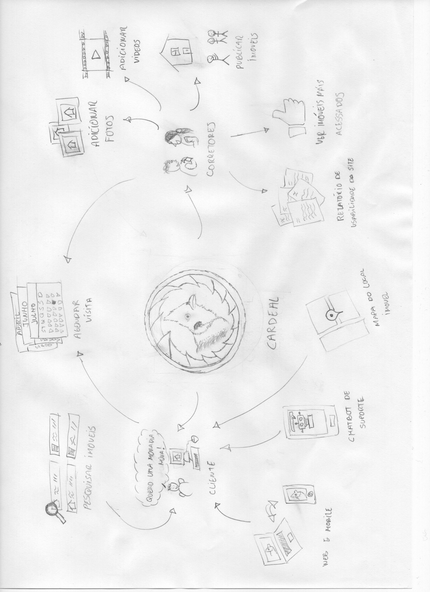
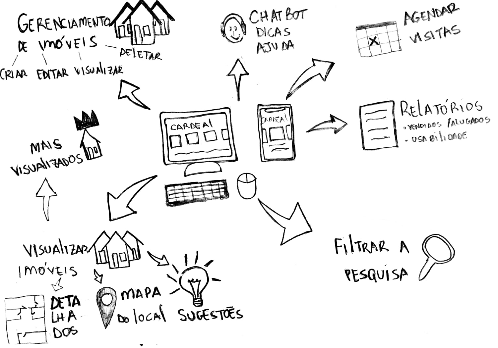
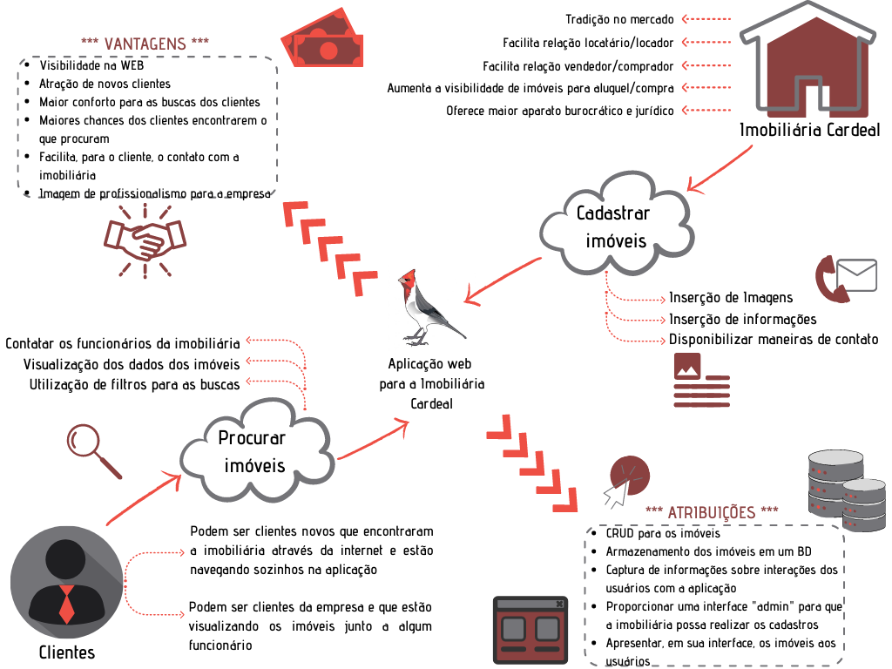
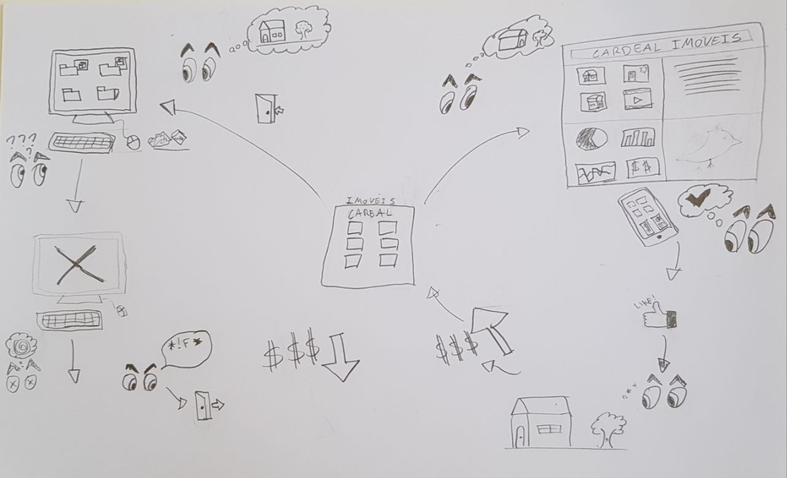
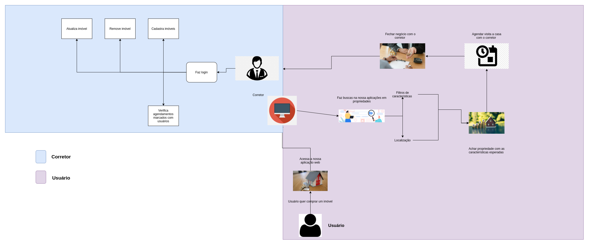
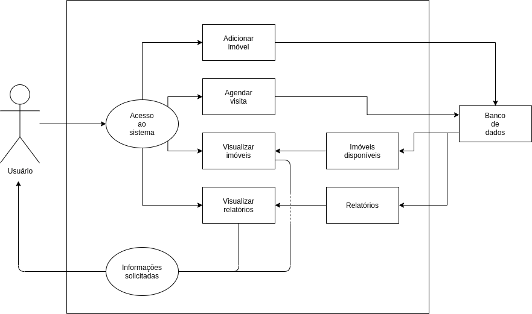
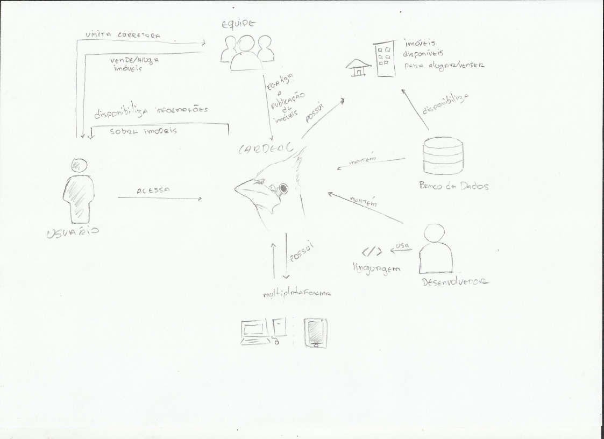

Rich Picture
1. Participantes
- Bruno Nunes
- Douglas Farias
- Estevão Reis
- Giovana Vitor
- Gustavo D.
- Igor Sousa
- Marcos C.
- Pedro Haick
- Tomás Veloso
2. Metodologia
O Rich Picture é uma maneira de modelar ideias, e bastante conveniente para ser aplicada em reuniões com clientes ou em equipes de desenvolvimento. Se apoia na atividade de fazer um rascunho de desenhos e usar pequenos textos para evidenciar um momento, um desejo, uma atividade, dentre outras coisas. Os desenhos podem ser feitos à mão ou por um software. Essa técnica é bastante rica poís podemos visualizar mais facilmente os requisitos necessários pra a implementação do software.
3. Resultados
A idéia desse Rich Picture foi buscar representar o sistema e a interação dele com os possíveis usuários, desde clientes que desejam comprar ou alugar uma residência, até os corretores que ficarão responsáveis pelo gerenciamento da plataforma.
3.1 Rich Picture dos entegrantes da Equipe
Bruno Nunes

Douglas Farias

Estevão Reis

Giovana Vitor

Gustavo D.

Igor Sousa

Marcos C.

Pedro Haick

Tomás Veloso

Após a conclusão de todos os desenhos, fizemos uma votação através de uma enquete no Telegram, e o desenho escolhido foi o da Giovana Vitor
3.2 Rich Picture 1.0
4. Referências
SERRANO, Milene: Arquitetura e Desenho de software - Aula- Projeto e Desenho de Software. Acessado em 02/08/2021
5. Versionamento
| Data | Versão | Descrição | Autor |
|---|---|---|---|
| 02/08/2021 | 1.0 | Criação do Documento | Estevao de Jesus Reis |
| 04/08/2021 | 1.1 | Padronização do documento | Bruno Nunes e Marcos Rodrigues |